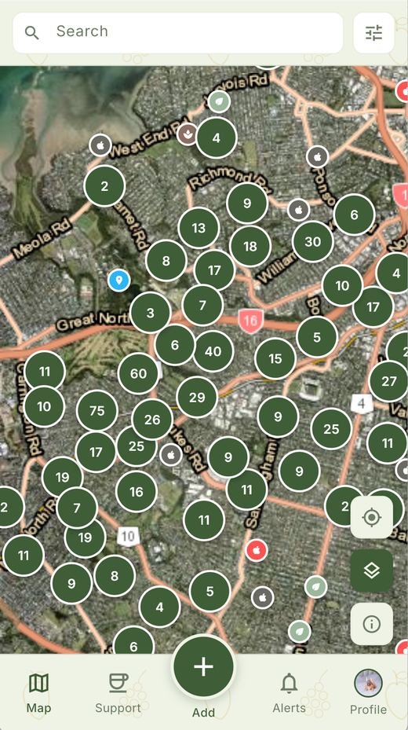
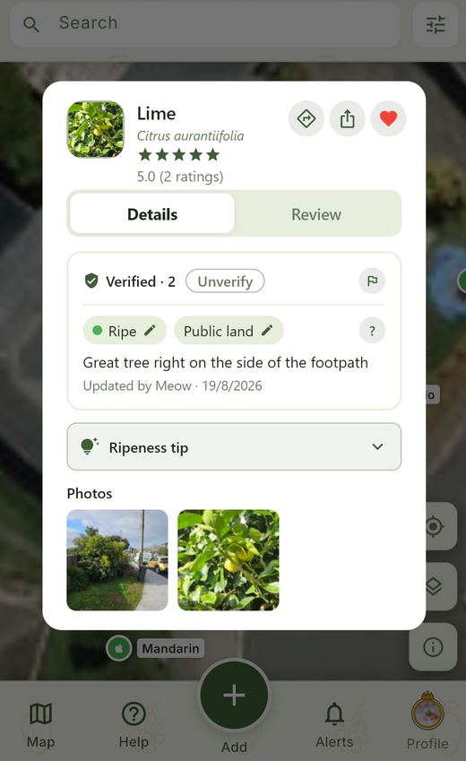
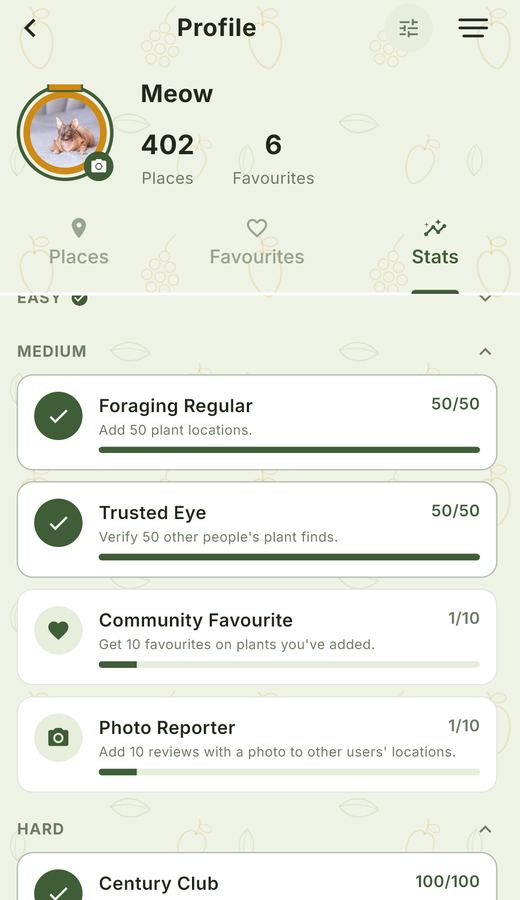
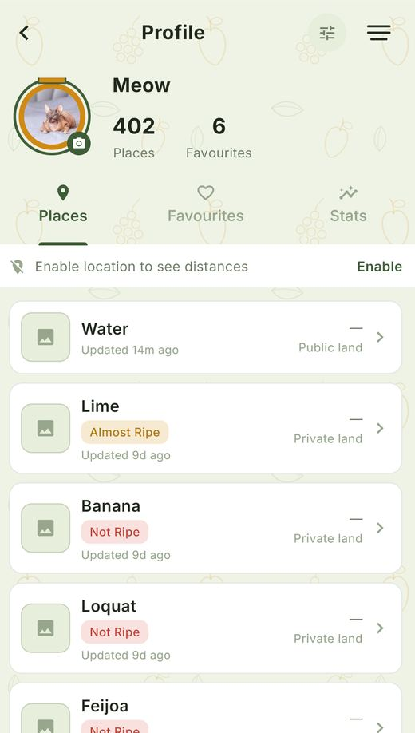

Find what's growing near you.
Local Pick is a community-powered map for foragers to discover and share edible plants nearby — and know what's actually ripe right now.
Launching first in Auckland, New ZealandA map built by the people who forage it
Add fruit, herbs, and nuts you find out in the wild, mark their ripeness, and help other foragers know what's in season nearby. Rate and verify locations to keep the map accurate for everyone.

What makes it useful
Everything is community-reported and kept current, so what you see on the map is what's actually there.
Interactive map
Browse a live map of fruit, herb, and nut locations people have shared near you.
Real-time ripeness
See what's ripe right now rather than just what's technically there, updated by foragers as things change.
Verified by foragers
Ratings, reviews, and community verification keep every location trustworthy.
Badges & achievements
Earn recognition like Foraging Regular and Trusted Eye as you add and verify finds.
A closer look
Discover nearby
See what's growing on your street, not just across town.

Rich local detail
Ratings, ripeness, land type, and real photos for every spot.

Track your contributions
Unlock badges as you add, verify, and share finds.

Your own patch
Keep tabs on every place you've found, ripe or not.